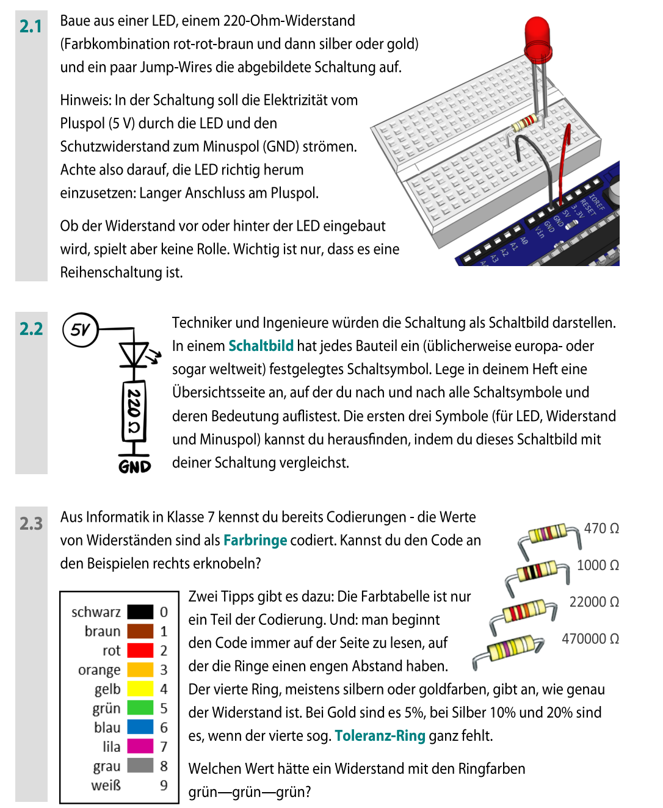

Einführung in den Mikrocontroller Arduino
Dieser Lernbaustein führt dich schrittweise an den Arduino heran: erst verstehst du die Platine,
dann baust du eine sichere LED-Schaltung und erst danach wird programmiert. So erkennst du später
leichter, ob ein Fehler an der Hardware, am Upload oder am Code liegt.
So arbeitest du hier
- Vorhersagen: Überlege zuerst, was passieren müsste.
- Ausführen: Baue oder teste dann nur einen kleinen Schritt.
- Untersuchen: Vergleiche Beobachtung und Erwartung.
- Ändern: Verändere erst danach gezielt eine Sache.
- Deine Texte werden lokal im Browser gespeichert (nicht an die Lehrkraft gesendet).
Wichtig (Technik & Sicherheit)
Du kannst immer alle Texte, die du hier in die Antwortboxen eingibst, mit in Zwischenablage kopieren speichern und in OneNote einfügen.
Elektrisch: Baue Schaltungen nur wie gezeigt auf und vermeide Kurzschlüsse.
Wichtig:
Zum Schluss gibst du deinen Namen links unten ein und klickst auf Summary & submit. Deine Daten werden an deine Lehrerin übertragen und eine TXT-Datei auf deinen Computer heruntergeladen. Diese Datei kannst du auch in OneNote einfügen.
Quelle der Inhalte: Lernbaustein-PDF, Seiten 1–5.
Inhaltsverzeichnis (Überblick)
Was kommt später?
Es folgen u. a. Programmieren, Blinken, Töne/Unterprogramme, Variablen, serielle Ausgabe, Schleifen, LEDs dimmen, If/While und mehr.
1 Was ist ein Mikrocontroller?
2 Es leuchtet!
3 Programm zum Programmieren
4 Das erste Blinken
5 Töne, Unterprogramme, Transistor
? Variablen, Schleifen, Bedingungen, Taster, Anzeigen, Motoren
Roter Faden
Du lernst zuerst das System kennen. Danach kommt der Stromkreis. Erst wenn du erklären kannst,
wohin der Strom fließt und welcher Pin beteiligt ist, ist der erste Programmcode sinnvoll.
Flussdiagramme kommen später als Werkzeug dazu: nicht als Extra-Theorie, sondern um Entscheidungen
und Wiederholungen im Code sichtbar zu machen.
Aufgaben 2.1–2.3

Original – Seite 5
Anmerkungen zu den Aufgaben
Auf dem Bild werden verschiedene Aufgaben gezeigt. Arbeite sie nicht als Rätsel ab, sondern immer nach derselben Route:
Aufbau lesen, Stromweg zeigen, Beobachtung notieren, Fachbegriff verwenden.
Baue eine Schaltung aus einer LED, einem 220-Ohm-Widerstand und einem Jumper-Wire wie im Bild beschrieben. Notiere:
- Wie hast du erkannt, welches LED-Beinchen an den Pluspol gehört?
- Spielt es eine Rolle, ob der Widerstand vor oder hinter der LED ist (solange es eine Reihenschaltung ist)?
Das Bild zeigt, wie man eine reale Schaltung als Schaltbild darstellt (mit Pluspol, Bauteilen und GND/Masse).
Schreibe in eigenen Worten: Welche Informationen liefert ein Schaltbild, und warum ist es praktisch?
Auf Seite 5 wird auf Farbringe von Widerständen Bezug genommen (Codierung von Zahlenwerten).
Notiere:
- Wie würdest du einer anderen Person erklären, was die Farbringe grundsätzlich bedeuten?
- Welche Informationen fehlen dir noch, um jeden Widerstand sicher zu bestimmen?
Merksatz: Reihe vs. Parallel
Bei der Reihenschaltung fließt der Strom nacheinander durch mehrere Bauteile; bei der Parallelschaltung gibt es mehrere Strompfade.
GND
Bezugspunkt/Masse, über den der Stromkreis zurückgeführt wird
Pin
Anschluss, den der Arduino lesen oder schalten kann
Widerstand
Bauteil, das den Strom begrenzt
LED
Leuchtdiode, die nur in Durchlassrichtung leuchtet
Wenn ihr abgeben sollt: Nutze Text kopieren und füge ihn in eure Abgabe (Moodle/Nextcloud-Formular) ein.